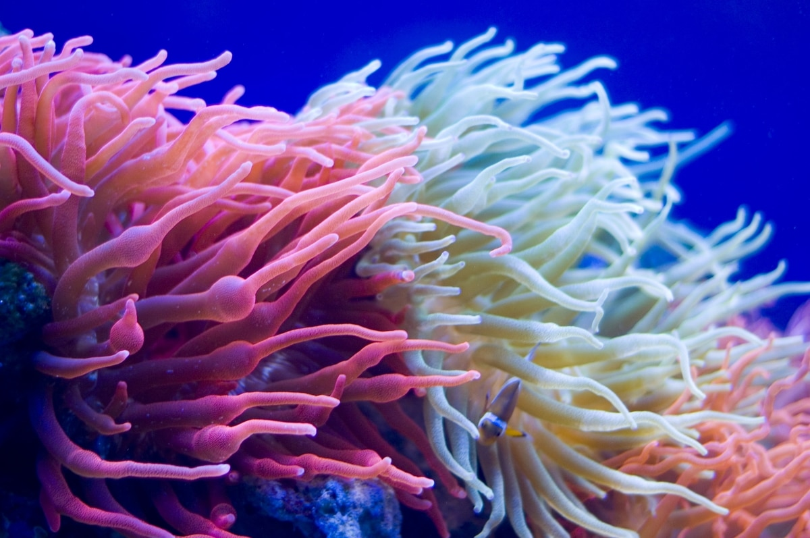

Загальні відомості
Найбільша довжина Азовського моря — 343 км, найбільша ширина — 231 км; довжина
берегової лінії — 1 472 км; площа поверхні — 37 605 км² (у цю площу не входять острови і
коси, що займають 107,9 км²).
За морфологічними ознаками воно належить до плоских морів і є мілководним водоймищем з невисокими
береговими схилами[13].
За віддаленістю від океану Азовське море є найконтинентальнішим морем планети.
Клімат
Акваторія моря лежить у перехідній зоні від морської до континентальної області помірного кліматичного поясу[14]. Увесь рік панують помірні повітряні маси. Переважає західний перенос. Наявні сезонні коливання температури повітря. Зволоження недостатнє. Цілий рік переважає циклонічна діяльність, погода мінлива, в холодну пору року часті шторми[15].
Батиметрія Азовського моря
Підводний рельєф моря порівняно простий. З віддаленням від берега глибини повільно і плавно наростають, досягаючи в центральній частині моря 14,4 м. Основна площа дна характеризується глибинами 5—13 м. Область найбільших глибин розташована в центрі моря. Малюнок ізобат близький до симетричного, порушується невеликою витягнутістю їх на північному сході в бік Таганрозької затоки. Ізобата 5 м розташовується приблизно за 2 км від берега, віддаляючись від нього біля Таганрозької затоки і в самій затоці біля гирла Дону. У Таганрозькій затоці глибини збільшуються від гирла Дону (2—3 м) у напрямку до відкритої частини моря, сягаючи на кордоні затоки з морем 8—9 м. У рельєфі дна Азовського моря наявні системи підводних пагорбів, які витягнуті вздовж східного (банка Железінська) та західного (банки Морська і Арабатська) узбереж, глибини над якими зменшуються від 8-9 до 3-5 м. Для підводного берегового схилу північного узбережжя характерне широке мілководдя (20-30 км) з глибинами 6-7 м, для південного узбережжя — крутий підводний схил до глибин 11-12 м.
Морські береги переважно плоскі та піщані, лише на південному березі трапляються пагорби вулканічного походження, які місцями переходять в круті передні гори.
Солоність
Гідрохімічні особливості Азовського моря формуються насамперед під впливом значного припливу річкових вод (до 12 % об'єму води) і утрудненого водообміну з Чорним морем.
Солоність моря до зарегулювання Дону була втричі меншою від середньої солоності океану. Величина її на поверхні змінювалася від 1 ‰ в гирлі Дону до 10,5 ‰ в центральній частині моря та 11,5 ‰ — в Керченській протоці. Після створення Цимлянського гідровузла солоність моря почала підвищуватися (до 13 ‰ в центральній частині). Середні сезонні коливання величин солоності рідко сягають 1 %.
Через малу солоність води море легко замерзає, тому до появи криголамів воно було несудноплавне з грудня до середини квітня. Протягом XX століття практично всі більш-менш великі річки, що впадають в Азовське море, були перегороджені греблями для створення водосховищ. Це спричинило значне скорочення скидання прісної води і мулу в море.
Географічні об'єкти
Характерною рисою північного, західного та східного берегів Азовського моря є миси та намивні піщано-ракушнякові коси:
Миси
- мис Хроні
- мис Зюк
- мис Чагани
- Казантип
- мис Чумбурський
- мис Ачуєвський
- Крива
- Білосарайська
Річки
В Азовське море впадають такі річки:
- Кальміус
- Протока
- Кубань
- Дон
- Міус